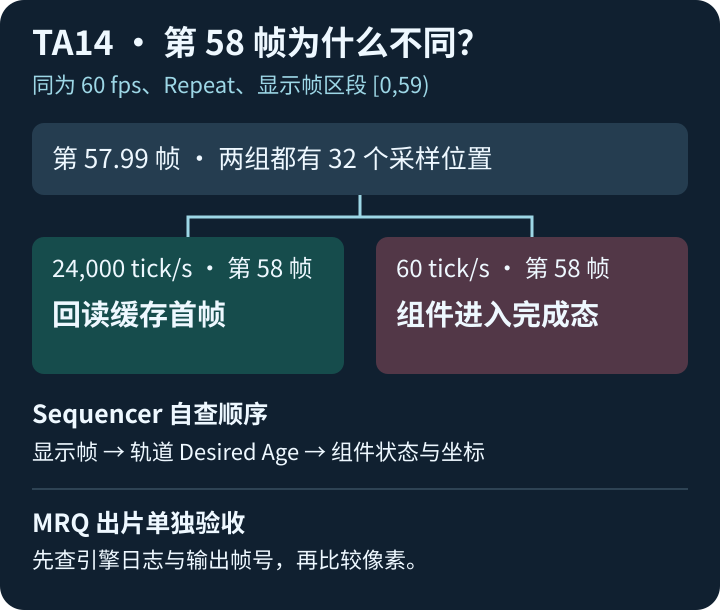

77的技术美术实战 · TA实践手记14 · English
Niagara 缓存到第 58 帧，为什么一组回到开头？
UE 5.8.4，单 CPU 发射器。两个 Sequencer 区段均为 60 fps、Repeat、显示帧范围 [0,59)。把两组内部时基设成 24,000 与 60 tick/s，对照同一缓存时点的轨道请求和组件状态。

先做一次读数自查
- 下载图解与原始采样 v1.0.2。解压打开「图解与免费手册/index.html」。
- 先选 57.99，再切到 58。记下两组 Desired Age、组件状态和采样位置数量。把插值从 B 切到 A 后再比一次。
- 如需复算，在解压根目录运行
python 复算原生轨道.py。用输出核对第 58 帧两种结果。
核对答案
57.99 帧两组各有 32 个位置。第 58 帧两种插值设置下，24,000 tick/s 都回读缓存首帧，60 tick/s 都进入完成态。本次对照限于这段缓存、区段与 Repeat 配置。MRQ 出片需单独检查日志和实际输出帧号。
可以用 TA14 复现反馈模板记录读数、离线复算、UE 实测或卡点。提交会创建公开 GitHub Issue。
本页使用 AI 辅助编辑，数据来自原生轨道采样。
回到 TA13 整帧练习 · 继续 TA15 缓存切入自查 · 返回学习站